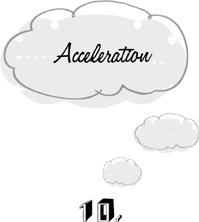
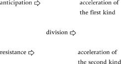

{% include JB/setup %}
{% raw %}
<div>

<h1 id="filepos178697" class="calibre19"><span class="calibre20"><span class="bold"><a class="calibre21"></a><a class="calibre21"></a></span></span></h1><div class="calibre16"> </div>
<p class="calibre22">                 <a class="calibre23"></a><a class="calibre23"></a><em class="calibre9">cceleration</em> is the trap of acting at a faster than optimal rate. We repair a broken appliance so hurriedly that we make mistakes and the appliance immediately breaks down again. As a result, the resources that were devoted to this project have gone to waste. We might as well have done nothing at all.</p>
<p class="calibre22">Acceleration is a mirror image of procrastination. When we procrastinate, we are slow to start: we put off getting to work on the broken appliance with one excuse after another. When we accelerate, we’re too quick to finish: we don’t give the task its due measure of time and attention. These two traps are by no means incompatible. Sometimes we procrastinate at the beginning and then accelerate to the end.</p>
<p class="calibre22">We need to make a distinction here between acceleration and simply moving quickly, which will be called <em class="calibre9">hurrying.</em> We hurry but we do not accelerate when we run out of a burning building as fast as we can. On the other hand, an ordinary walking pace may already be accelerative when <a class="calibre23"></a>we’re making our way through a minefield.</p>
<p class="calibre22">There are both advantages and disadvantages to doing things rapidly. The advantages are that (<span><span class="calibre26">1</span></span>) we get unpleasant business over with more quickly, (<span><span class="calibre26">2</span></span>) we sooner attain the goal we are working toward, and (<span><span class="calibre26">3</span></span>) we can sooner begin the next item of business in our life. For example, when we wash the dinner dishes as rapidly as we can, we may be motivated by the desire (<span><span class="calibre26">1</span></span>) to get a distasteful chore over with, (<span><span class="calibre26">2</span></span>) to have the dishes clean in time for a mother-in-law’s imminent inspection, or (<span><span class="calibre26">3</span></span>) to give ourselves more time for a later and more important project.</p>
<p class="calibre22">The <em class="calibre9">dis</em>advantages of doing things too quickly are that (<span><span class="calibre26">1</span></span>) we are more likely to make errors along the way and (<span><span class="calibre26">2</span></span>) the activity is made more unpleasant by the irritant of having to rush. Washing the dishes as rapidly as we can, (<span><span class="calibre26">1</span></span>) we leave coffee stains on the bottoms of the cups and food particles between the fork tines, and (<span><span class="calibre26">2</span></span>) we increase the distastefulness of the chore by not taking the time to savor the positive elements of the experience. If the second disadvantage does not seem a great loss in the case of washing dishes, we may contemplate the cost of wolfing down what might have been a superb meal.</p>
<p class="calibre22"><a class="calibre23"></a>The advantages and disadvantages of hurrying have different weights in different circumstances. The disadvantage of increasing the chance of making an error by hurrying through a minefield outweighs the advantage of getting away from the field a few minutes sooner. But the disadvantage of leaving the dishes less than perfectly clean may be less important to us than the advantage of getting away from them sooner. There is no universal formula that tells us how fast we should work in every situation. Nevertheless, there’s a class of circumstances in which hurrying is demonstrably non-optimal regardless of the values we assign to the various advantages and disadvantages. <em class="calibre9">If going faster increases one of the disadvantages without increasing any of the advantages, then we know that it’s too fast.</em> At this point, hurrying has turned into acceleration.</p>
<p class="calibre22">Let’s consider activities that are not unpleasant in and of themselves. In that case getting them over with quickly is not automatically an advantage, as it would be if the task were to carry a scorching hot plate to the table. But we might still wish to hurry (1) because the end result of our work is needed quickly or (<span><span class="calibre26">2</span></span>) because we have future business that can’t wait for long. <a class="calibre23"></a>There are no other reasons, however. If both the result of our work and the next order of business can wait, it’s a trap to increase the risk of error and diminish the pleasantness of the work by going even the slightest bit too fast. With nothing pressing, we should take all the time that’s needed to ensure a maximal performance.</p>
<p class="calibre22">Yet we’re often tempted to rush by the sheer magnitude of things to come, even though we derive no benefit from doing so. We wolf down dinner to get to sex. Assuming that the opportunity for sex will not get up and go away, this behavior results only in a diminution of our total pleasure. If a leisurely dinner is worth <span><span class="calibre26">5</span></span> points on our pleasure scale, then a hurried dinner will earn us less than <span><span class="calibre26">5</span></span> points. Suppose its value to be <span><span class="calibre26">2</span></span>, and suppose that sex is a <span><span class="calibre26">10</span></span>. Then a leisurely dinner followed by sex is worth <span><span class="calibre26">5</span></span>+<span><span class="calibre26">10</span></span>=<span><span class="calibre26">15</span></span>, while sex following a hurried dinner gives us only <span><span class="calibre26">2</span></span>+<span><span class="calibre26">10</span></span>=<span><span class="calibre26">12</span></span>. To be sure, we get the <span><span class="calibre26">12</span></span> points sooner than the <span><span class="calibre26">15</span></span>. But this is significant only if we have a reason to hurry—for example, if there’s someplace else we have to get to immediately after sex.</p>
<p class="calibre22">Rushing through the activity at hand even though we’re not pressed for time is <em class="calibre9">acceleration of the first kind.</em></p>
<p class="calibre22"><a class="calibre23"></a>If the present activity can wait, it’s a trap to rush through it even if the next order of business <em class="calibre9">can’t</em> wait. For here we could simply postpone the present project until a more leisurely time. Instead of hurriedly trying to finish a newspaper article before the commercial is over and the TV show begins, we can read it at our leisure when the show is done. In these <em class="calibre9">accelerations of the second kind</em>, there’s no need to rush through what we’re doing because we needn’t be doing it now in the first place.</p>
<p class="calibre22">What possesses us to rush when we are not pressed for time? Significantly, acceleration is always preceded by a <em class="calibre9">divided</em> state of mind. We wouldn’t rush through an innocuous or pleasant task unless we had some other project or condition in mind at the same time. We wolf down our dinner because we’re thinking of the after-dinner sex while we eat, and we rush through the newspaper article because we have an eye on the TV show to come—only one minute left! thirty seconds! twenty! If we had no agenda for the future, we would have no place to rush to. We would abide in the present task and make the best of it.</p>
<p class="calibre22">The unpleasantness of division causes us to resort to various folk remedies whose secondary <a class="calibre23"></a>complications are often as injurious as the original disease. With two things on our mind, we may <em class="calibre9">save the best for last</em>, so that we’re no longer burdened by other concerns when we get to it. Alternatively, we may try to unburden ourselves immediately by an act of <em class="calibre9">negative anticipation</em>, canceling one of the two activities so that we have only one thing to think about. Or we may <em class="calibre9">accelerate</em> through the first activity in order to arrive more quickly at the undivided state. Acceleration is a misguided strategy for coping with division.</p>
<p class="calibre22">We observe the link between acceleration and division when a child arrives at a playground after a long and bitter absence. Attracted simultaneously to all the rides, he can’t fully enjoy any one of them without divisive longings for the others. So he takes one quick run down the slide, rushes to the monkey bars where he clambers to the top and immediately descends, goes up and down on the seesaw three times, and runs off to the swings. Having fulfilled his agenda as rapidly as possible, he returns to a single piece of equipment and gives it his undivided attention.</p>
<p class="calibre22">The divided state that leads to acceleration is in turn caused by either anticipation or resistance. Anticipation ultimately produces accelerations <a class="calibre23"></a>of the first kind, and resistance is responsible for accelerations of the second kind. It’s instructive to see how these two sequences of mental traps develop.</p>
<p class="calibre22">If we had only the present task in mind, we wouldn’t rush because there would be no other condition to rush toward. Thus the first step on the road to acceleration is a thought about some future activity. Eating dinner, we begin to contemplate the even greater pleasures of the bedroom that await us. If the future project can wait, thinking about it now when we already have something to do is <em class="calibre9">anticipatory.</em> Furthermore, the anticipated project competes for our attention with the task at hand, creating a state of division. And then we rush through the present activity to terminate our division. The possibility of enjoying dinner having been undermined by anticipation, we try to get it over with as quickly as possible. Yet we have all the time in the world. This is acceleration of the first kind.</p>
<p class="calibre22">On the other hand, if the present task can wait but a future project cannot, we’re guilty of <em class="calibre9">resistance</em> for not dropping the former altogether. The commercial is just about over, and still we hold on to the idea of finishing our article. <a class="calibre23"></a>Clutching the old as the new forces itself upon us, we’re again precipitated into a state of division, and again we try to shorten our pain by rushing through the task at hand. In this case, however, the better course would be simply to postpone the task at hand. This is how acceleration of the second kind comes about.</p>
<p class="calibre22">In sum, we have the following relationships:</p>
<p class="calibre4"></p><div class="calibre5"> </div>
<p class="calibre22">The steps on the journey of life appear one at a time and at their own pace. If we lunge ahead or lag behind, we stumble and fall. Lunging ahead is anticipation and acceleration of the first kind. Lagging behind is resistance and acceleration of the second kind.</p>
<p class="calibre22"><em class="calibre9">Festina lente</em>—make haste slowly—another proverb on our side.</p>
<p class="calibre4"></p><div class="calibre5"> </div>
<p class="calibre24"><a class="calibre23"></a>We’ve seen that both anticipation and resistance often develop into chronic conditions. We may always be trying to anticipate another step into the future, and our backlog of unfinished business may always be a source of resistance to the new. Either of these maladies may be further compounded by <em class="calibre9">chronic acceleration</em>, a condition in which we’re perpetually rushing through whatever we are doing in order to get to the next thing.</p>
<p class="calibre22">Chronic acceleration is the state of always being on the way to somewhere else. We rush through the main course to get to the dessert. We rush through dessert because we can’t live with the dirty dishes. We rush through the dishes to get to our book. If the book is interesting, we’re beckoned by each page to rush through its predecessor—an acceleration of the first kind. If the book is dull, we read as quickly as we can to get it over with—an acceleration of the second kind. Life is just one damn thing after another.</p>
<p class="calibre22">On a larger timescale, we see each period of our life as mere preparation for the next. We have to finish our education as quickly as possible so that we may embark on our professional <a class="calibre23"></a>career. We must achieve professional success as soon as we can so that we may begin to enjoy status and security. After success comes a mad dash to find something else to absorb our energies. And having invented a new problem for ourselves, we rush to find the solution as quickly as we possibly can. It seems that the present is always something to get over. We fail to see the logical consequence of living like this: if we’re always getting the present over with, then the whole of life becomes something to get over, like a flu. Chronic acceleration is a headlong gallop toward death.</p>
<p class="calibre22">If our work is infinite—if it will never be at an end—then what’s the point of rushing? Expediting the end of one chore earns us only the privilege of beginning the next. Infinity minus one is still infinity. Therefore speed can’t improve our condition. We might as well take our time with everything we do.</p>
<p class="calibre22">Chronic acceleration can so accustom us to rushing that we no longer need an excuse for it. Even if the activity is pleasant and we have nothing else to do, we automatically try to get it over with as quickly as we can. We stroll urgently through the park, as though our aim <a class="calibre23"></a>were not to stroll but to <em class="calibre9">have</em> strolled. In this state of <em class="calibre9">empty acceleration</em>, we take it for granted that there must be <em class="calibre9">some</em> reason to rush, even though we can’t immediately call it to mind. Empty acceleration is the experience of pure, unconceptualized urgency.</p>  <div class="mbppagebreak" id="calibre_pb_24"></div></div>

{% endraw %}

